MBLogic
for an open world in automation
MBLogic
for an open world in automation
Search Instructions
Search instructions are used to search a range of registers to find a value which matches the search criteria. The search value may be a register, constant, or string constant.
Continuous Search
| Instruction | Description | # Params | One Shot | Symbol |
|---|---|---|---|---|
| FINDEQ | Search table for equal to | 5 or 6 | X | 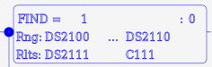 |
| FINDGE | Search table for >= | 5 or 6 | X | 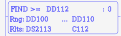 |
| FINDGT | Search table for > | 5 or 6 | X | 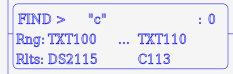 |
| FINDLE | Search table for <= | 5 or 6 | X | 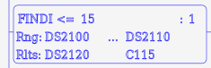 |
| FINDLT | Search table for < | 5 or 6 | X | 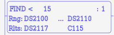 |
| FINDNE | Search table for not equal | 5 or 6 | X | 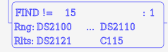 |
Incremental Search
| Instruction | Description | # Params | One Shot | Symbol |
|---|---|---|---|---|
| FINDIEQ | Incremental search table for equal to | 5 or 6 | X | 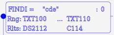 |
| FINDIGE | Incremental search table for >= | 5 or 6 | X | 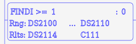 |
| FINDIGT | Incremental search table for > | 5 or 6 | X | 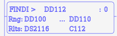 |
| FINDILE | Incremental search table for <= | 5 or 6 | X | |
| FINDILT | Incremental search table for < | 5 or 6 | X | 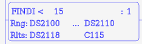 |
| FINDINE | Incremental search table for not equal | 5 or 6 | X | 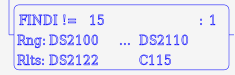 |
| FINDNE | Search table for not equal | 5 or 6 | X |
Search instructions each come in two forms - continuous and incremental. A continuous search will begin at the start of the search register range each time it is invoked. An incremental search will begin at the next position after the last match. If the last incremental search did not result in a match before it reached the end of the range, the next search will start at the beginning again.
The search instructions expect the following parameters:
- Search Value - The value to search for. This may be a register, constant, or string constant.
- Start - The beginning of the range of registers to start the search at. This must be compatible with the value being searched for. This must be of type DS, DD, DH, DF, or TXT.
- End - The end of the range of registers being searched. This must be of the same type and a higher address than "start".
- Result - The register to place the search result in. This must be of type DS or DD.
- Result flag - A Boolean address to place the status of the search in. This will be true if the search was successful, or false if not. This must be a "C" address.
- An optional one shot parameter of 0 or 1. If the paramter is set to "1", the one-shot option is enabled and the instruction executes only when the logic stack transitions from false to true. If the paramter is set to "0", the one-shot option is disabled and the instruction executes whenever the logic stack is true. If the parameter is missing, it has the same effect as setting it to "0".
FINDEQ searchvalue start end result resultflag (one-shot)
The result of a search is placed in the specified register. If the search was successful (a match was found), the register is set to an integer value equal to the index (number of elements) from the beginning of the search range to where the match was found. If the search was not successful, the result register is set to -1.
When a string constant is used as the search value, the search is conducted by comparing the entire string to a number of registers equal to the length of the string. If a match is not found, the search position increments by one register position and repeats until a match is found or the end of the search range is reached.
Example:
// Search for constant. NETWORK 1 STR X1 FINDEQ 1 DS100 DS110 DS111 C111 // Search for register. NETWORK 2 STR X2 FINDGT DD112 DD100 DD110 DS112 C112 // Search for character. NETWORK 3 STR X3 FINDEQ "c" TXT100 TXT110 DS113 C113 // Search for character string. NETWORK 3 STR X3 FINDEQ "cde" TXT100 TXT110 DS114 C114 // Search with one shot. NETWORK 5 STR X5 FINDIEQ 15 DS100 DS110 DS115 C115 1
Ladder Examples
The following shows examples in ladder format.
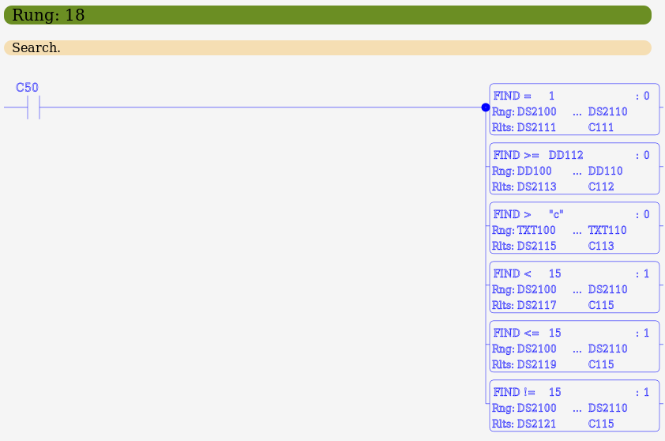 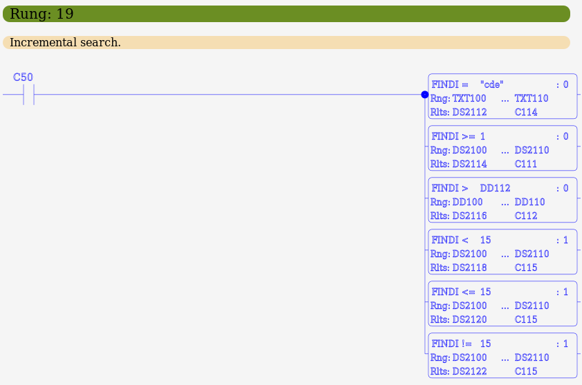